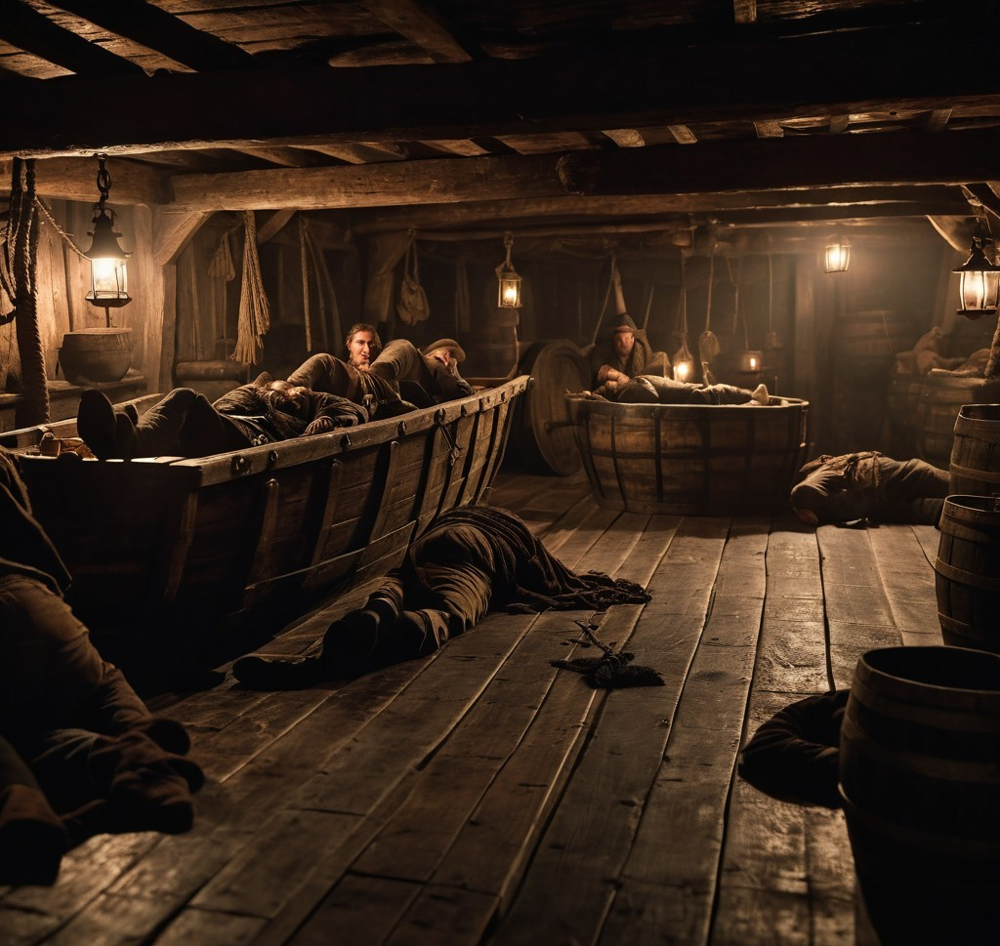
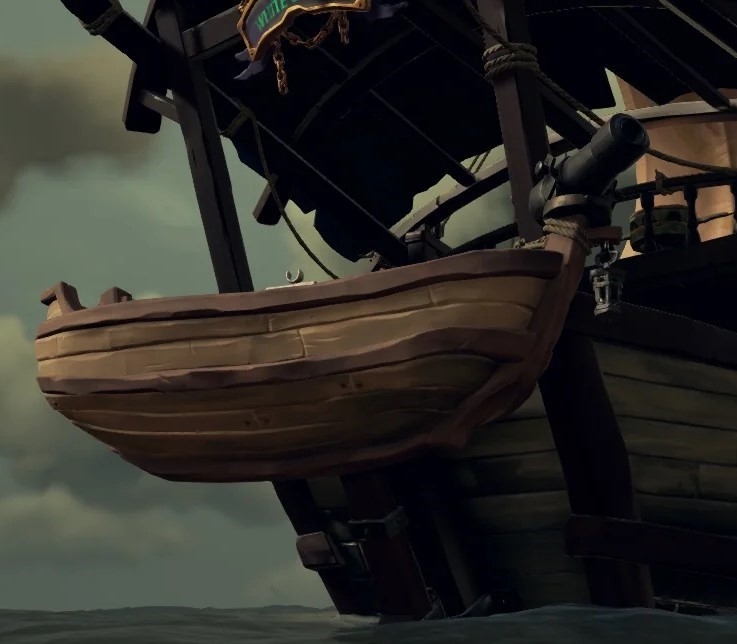

Le verrou de fer
Les joueurs commencent dans une obscurité presque totale, ressentant immédiatement la froideur du métal et l’humidité de la cale. La seule source de lumière est un vieux chandelier dont la lumière vacillante révèle à peine les limites de la cage. Le reste de la zone est complètement plongé dans le noir. Les murs suintent d’humidité et le sol semble instable. Leurs poignets sont enchaînés, et une clé est nécessaire pour les libérer, mais elle est hors de portée directe de la plupart. Les joueurs doivent fouiller méthodiquement la pièce, observer les indices laissés et réfléchir ensemble pour récupérer cette clé. Seul un membre de l’équipe peut physiquement l’atteindre, ce qui force les joueurs à démêler les chaînes tout en communiquant pour diriger celui dont la chaîne est assez longue. La clé est cachée dans une vieille bouteille en verre. Une fois récupérée, une lampe s’allume au fond de la cale, éclairant légèrement la pièce et guidant les joueurs vers la sortie. Si les joueurs se trompent, un son directionnel les aidera à se recentrer sur ce qu’ils ont négligé.
Les secrets du Désordre
Les joueurs commencent dans une obscurité quasi totale, ressentant immédiatement la froideur du métal et l’humidité de la cale. Un vieux chandelier diffuse une lumière vacillante qui permet à peine de distinguer les limites de la cage. Le reste de la zone est plongé dans l’obscurité complète, les murs suintant d’humidité et le sol paraissant instable sous leurs pieds. Leurs poignets sont enchaînés, et seule une clé peut les libérer, mais elle est hors de portée directe pour la plupart des joueurs. Ils doivent fouiller méthodiquement la pièce, en observant les indices laissés çà et là. Ensemble, ils réfléchissent à la meilleure façon de récupérer cette clé. Un seul membre de l’équipe est physiquement capable de l’atteindre, ce qui oblige les joueurs à démêler leurs chaînes et à coopérer en se déplaçant pour donner des indications précises. La clé est cachée dans une vieille bouteille en verre, ajoutant une difficulté supplémentaire. Une fois qu’ils l’ont récupérée, une vieille lampe s’allume au fond de la cale, éclairant faiblement la pièce et leur fournissant une direction claire vers la sortie. Si les joueurs empruntent une mauvaise piste, un son directionnel les aide à se concentrer sur les éléments qu’ils ont peut-être négligés.
Coup de froid
Les joueurs émergent de la cale pour arriver sur le pont supérieur. L’air glacé les force à se hâter. L’humidité rend leurs pas incertains, car le sol glisse. Le craquement du bois sous leurs pieds est presque couvert par le fracas des vagues contre la coque. La lune, partiellement cachée par les nuages épais, éclaire à peine le chemin. Ils doivent progresser à travers un pont encombré, déplacer des caisses et défaire des cordages pour atteindre la poupe, où se trouve probablement un canot. De nombreux mécanismes doivent être compris et activés pour libérer le passage. Un jeu de mémoire les amène à retenir les bons cordages à tirer simultanément afin de relever les filets tombés des mâts brisés. Des sons directionnels, comme des voiles qui claquent ou des cris d’oiseaux, peuvent rappeler l’urgence ou indiquer la bonne direction. Les flaques et obstacles compliquent leur progression, d’autant que la température devient de plus en plus insupportable.
La fuite
Arrivés à la poupe du navire, la liberté est à portée de main ! Un canot attend l’équipe pour qu’elle puisse s’enfuir, éclairée par quelques lanternes vacillantes. Il ne reste qu’à mettre à l’eau l’embarcation avant l’arrivée des derniers gardes. Cependant, les mécanismes lents et rouillés ne fonctionnent plus, bloquant pour l’instant les aventuriers. Le temps presse : ils doivent réparer le mécanisme qui permet de descendre les canots et s’échapper. Pour cela, ils doivent retrouver des outils récoltés au cours de l’aventure : une manivelle pour le système de poulie, un engrenage manquant qui assure la liaison entre les différents mécanismes, et une scie équipée d’un dispositif de sécurité pour couper des cordages emmêlés retenant le bateau. Enfin, ils devront mettre le canot à la mer, qui se trouve dans un bassin non visible pour des raisons logistiques, afin de savourer leur victoire. L’équipe doit faire preuve d’ingéniosité et de rapidité pour convertir tous leurs efforts en succès, car la liberté n’attend pas !
